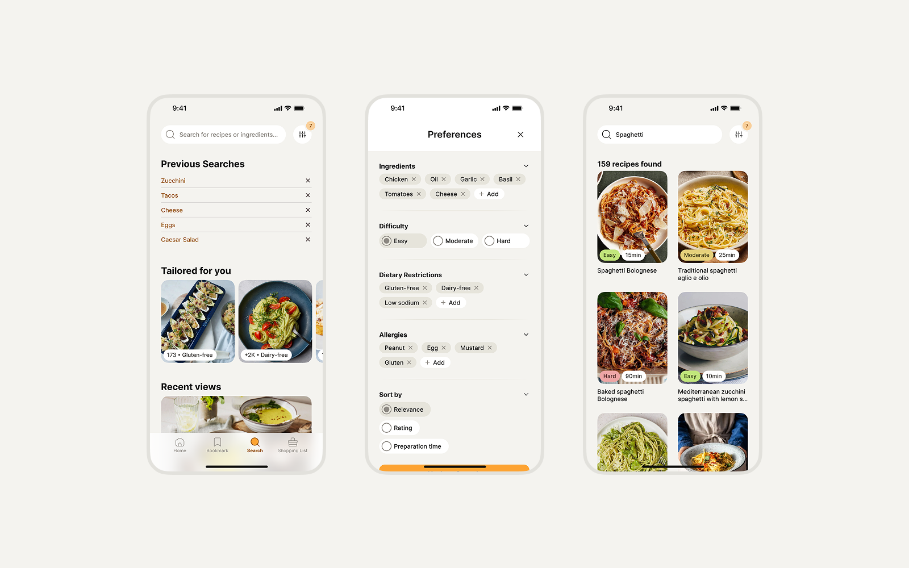
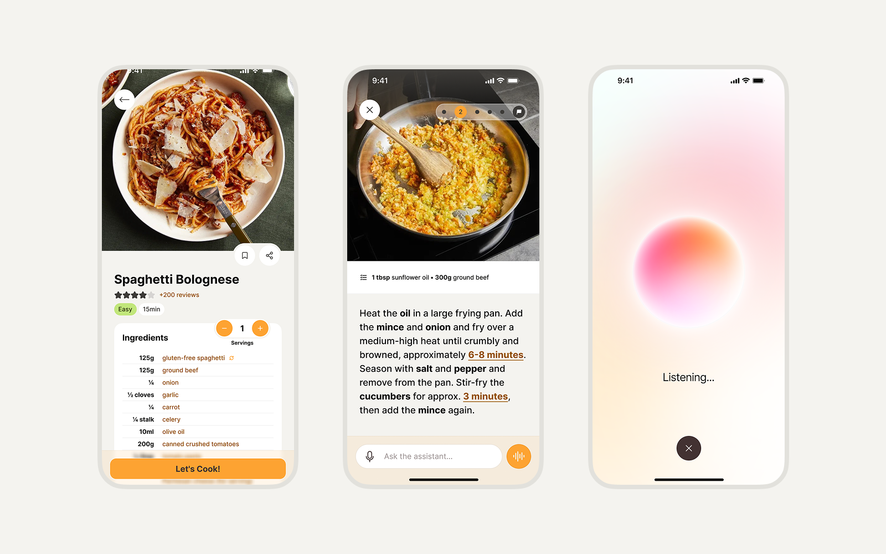

Cook Mate
A hands-free start for newbie chefs Um começo mãos livres para cozinheiros iniciantes
A concept app that helps rookie cooks find recipes from what's already in the kitchen, and follow them hands-free, step by step. Um conceito de app que ajuda cozinheiros iniciantes a encontrar receitas com o que já têm na cozinha, e a segui-las sem usar as mãos, passo a passo.

Recipe apps assume you know what to make and have everything you need. Beginners don't. Apps de receita presumem que você sabe o que fazer e tem tudo à mão. Iniciantes não têm.
Cook Mate set out to empower rookie cooks with an app that uses modern technology to make cooking simpler. New cooks consistently struggle to find recipes that match their skill level, dietary preferences, and, crucially, the ingredients they already have on hand. Cook Mate had to meet people where they actually are: limited skills, limited time, and whatever's in the fridge. O Cook Mate nasceu para empoderar cozinheiros iniciantes com um app que usa tecnologia para simplificar o cozinhar. Iniciantes têm dificuldade recorrente para encontrar receitas que combinem com seu nível, suas preferências alimentares e, o ponto crucial, os ingredientes que já têm em casa. O Cook Mate precisava encontrar as pessoas onde elas realmente estão: pouca habilidade, pouco tempo e o que houver na geladeira.
This was a solo, self-directed project. I owned the full process: competitive research, audience definition, personas, ideation, visual direction, a component library, and high-fidelity prototypes. Este foi um projeto autoral, solo. Conduzi todo o processo: pesquisa de concorrentes, definição de público, personas, ideação, direção visual, uma biblioteca de componentes e protótipos de alta fidelidade.
ResearchPesquisa
I ran a thorough analysis of leading cooking apps (Yummly, Tasty, Kitchen Stories, SuperCook), comparing strengths and weaknesses. I mapped the pain points and motivations of new cooks to pinpoint the target audience, then developed two proto-personas capturing the key behaviors of typical users. Fiz uma análise detalhada dos principais apps de culinária (Yummly, Tasty, Kitchen Stories, SuperCook), comparando forças e fraquezas. Mapeei as dores e motivações de novos cozinheiros para definir o público-alvo e desenvolvi duas proto-personas capturando os comportamentos principais dos usuários típicos.
Key findingsPrincipais achados
-
01
Competitor gaps.Lacunas dos concorrentes. Existing apps had poor filtering and failed to recommend recipes based on available ingredients or offer substitutions. A clear opening for a flexible, beginner-friendly experience. Os apps existentes tinham filtros ruins e não recomendavam receitas com base nos ingredientes disponíveis nem ofereciam substituições. Uma abertura clara para uma experiência flexível e amigável a iniciantes.
-
02
User insights.Insights de usuário. Most users were women (80%), prioritized healthy eating (56%), and sought budget-friendly meals (67%). With 60% cooking at home but preferring quick recipes, the app had to be simple, cost-effective, and time-efficient. A maioria era mulher (80%), priorizava alimentação saudável (56%) e buscava refeições econômicas (67%). Com 60% cozinhando em casa, mas preferindo receitas rápidas, o app precisava ser simples, econômico e eficiente no tempo.
Design decisionsDecisões de design
I shaped the feature set around two jobs beginners need help with. To find the right recipe: ingredient-based search, skill-level filtering, and dietary and allergy filters. To follow it confidently: step-by-step interactive guides, voice-guided cooking that reads steps and sets timers hands-free, and a progress tracker. Modelei o conjunto de funcionalidades em torno de duas tarefas com que iniciantes precisam de ajuda. Para encontrar a receita certa: busca por ingredientes, filtro por nível e filtros de dieta e alergia. Para seguir com confiança: guias interativos passo a passo, cozinha guiada por voz que lê os passos e ajusta timers sem usar as mãos, e um acompanhamento de progresso.

PrototypingPrototipação
With no existing design library, I started with hand-drawn wireframes to validate ideas fast. I then researched visual styles from food design and recipe books to set the look and feel, built a component library in Figma for consistency, and produced polished high-fidelity prototypes ready for testing. Sem uma design library existente, comecei por wireframes desenhados à mão para validar ideias rápido. Depois pesquisei estilos visuais de design gastronômico e livros de receita para definir a identidade, montei uma biblioteca de componentes no Figma para consistência e produzi protótipos de alta fidelidade prontos para teste.
Cook Mate was paused due to project limitations and never launched. What it produced was a clear, validated foundation: a strong understanding of beginner cooks' needs and a complete design system that could power future development or similar products. O Cook Mate foi pausado por limitações do projeto e nunca foi lançado. O que ficou foi uma base clara e validada: um entendimento sólido das necessidades de cozinheiros iniciantes e um design system completo, capaz de alimentar desenvolvimentos futuros ou produtos similares.
This project reinforced what carries into every engagement: validate user needs early, adapt to real-world constraints, and build scalable design systems that hold value even when a product doesn't ship. Not every project launches, but every one sharpens the problem-solving. Este projeto reforçou o que carrego para cada trabalho: validar necessidades cedo, adaptar-se às restrições reais e construir design systems escaláveis que mantêm valor mesmo quando um produto não chega a sair. Nem todo projeto é lançado, mas todo projeto afia a resolução de problemas.